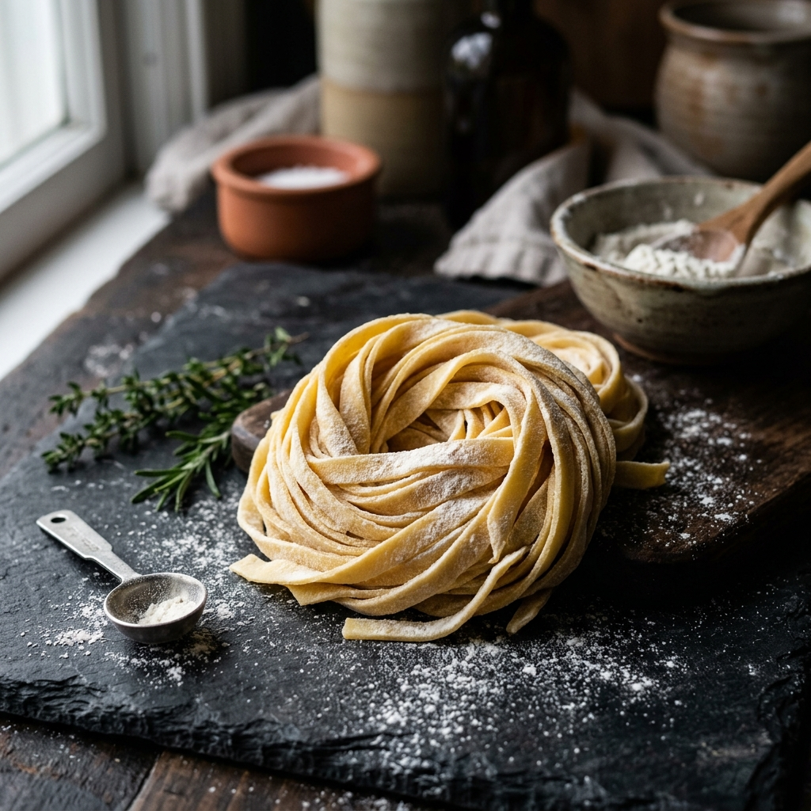

Italian Legacy
The Legend of Rome
1914, Via della Scrofa
Fettuccine Alfredo was created by Roman restaurateur Alfredo di Lelio in a heartfelt effort to entice his pregnant wife, Ines, to eat. He took extra-fine fettuccine, tossed it with triple butter and abundant Parmigiano-Reggiano, and served it warm.
When Hollywood stars Douglas Fairbanks and Mary Pickford dined at his restaurant during their Roman honeymoon, they fell in love with the dish, spreading its fame across the globe and gifting Alfredo a gold fork and spoon.
"The simplest ingredients, executed with precision, create the most luxurious texture."
